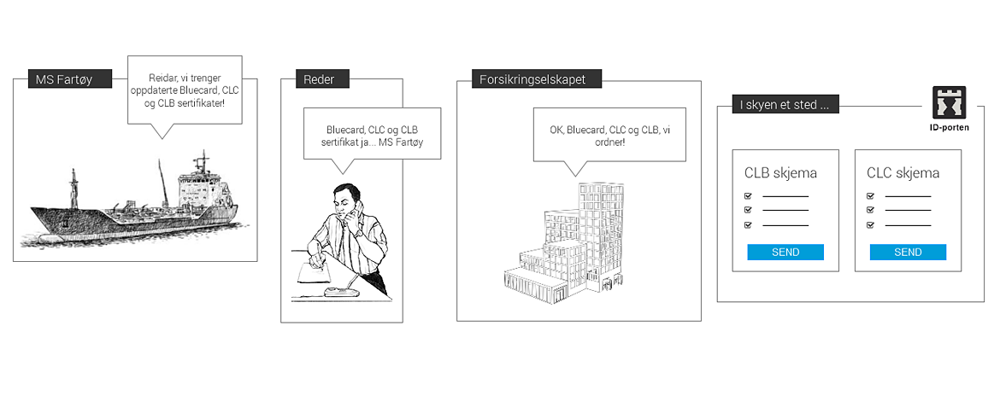

{{> header}}

<div class="article-wrapper">


    <h5>Method</h5>

    <h1>Storyboarding</h1>

    <h2>A storyboard is like a cartoon, telling a visual story about interactions between key actors and systems</h2>

    <div class="article-image">
        <div class="article-image-element">
            
              <div class="article-image-overlay">
                  <!--<h2><span class="highlight">Focus group meeting at Norwegian Maritime Authority where we discussed the certification needs of ship owners, ship builders and seafarers</span></h2>-->
              </div>
        </div>
    </div>


    <div class="article-text">

        <p>Visualizing stories help create understanding across the many different types of people who are involved in a project.
          A storyboard increases everyone's comprehension of what we what to achieve by developing a product or service.

        </br></br>
        Typically, the storyboard illustrates an ideal flow and interaction between various people, or actors, who play key roles in the story.
        These actors are put into relevante situations that also include systems, tools and applications involved, and the storyboard communicates
        what they may think, say and do, from where the story begins to where it ends.

        </br></br>
        A storyboard is often created early in the conceptualization phase, to get everyone on the same page, and is always a rough sketch of the product's main narrative.

      </p>

    </div>

</div>


{{> footer}}
